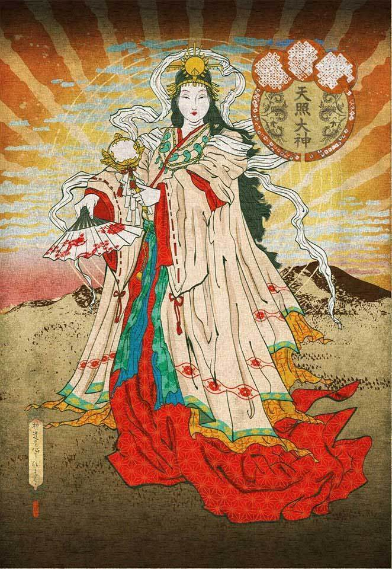
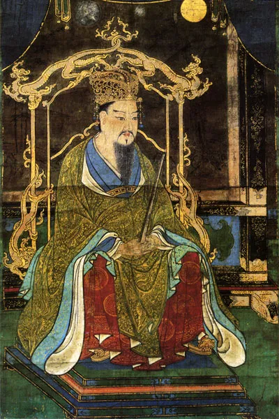
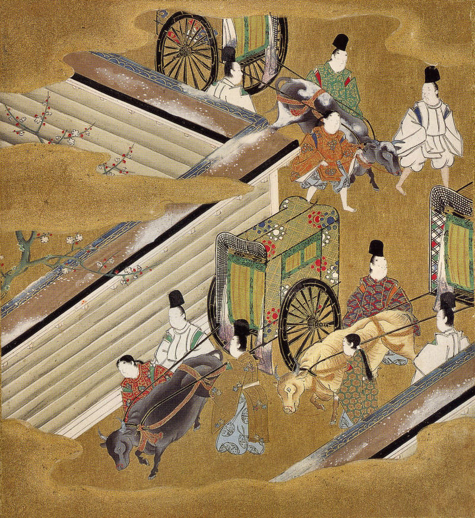
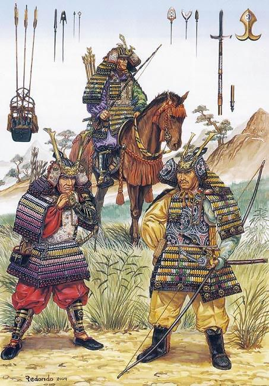
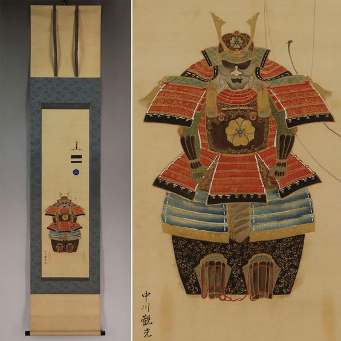
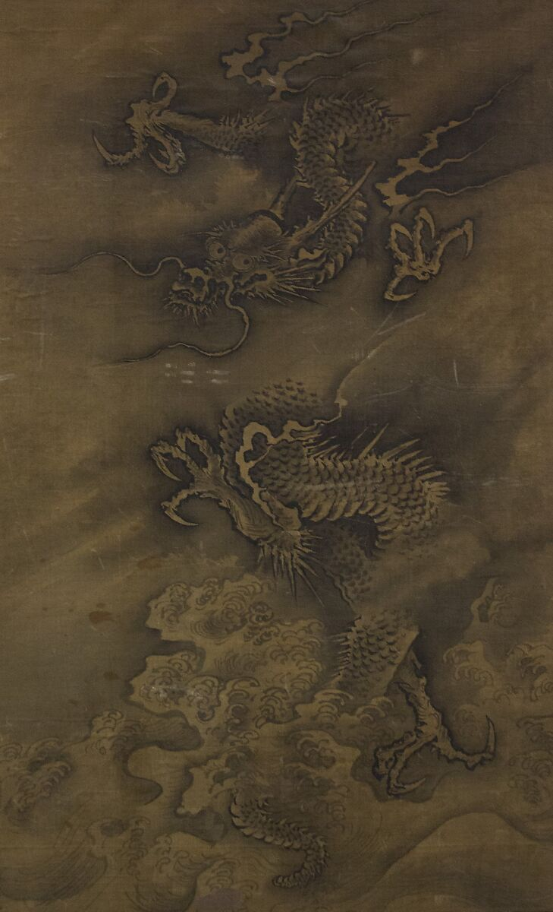
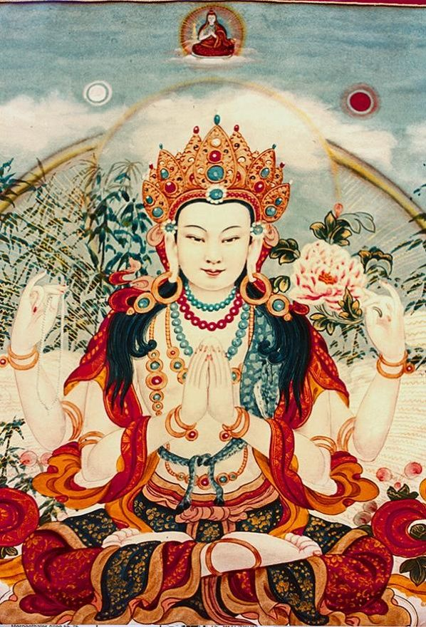
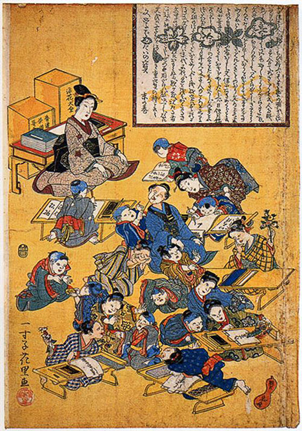
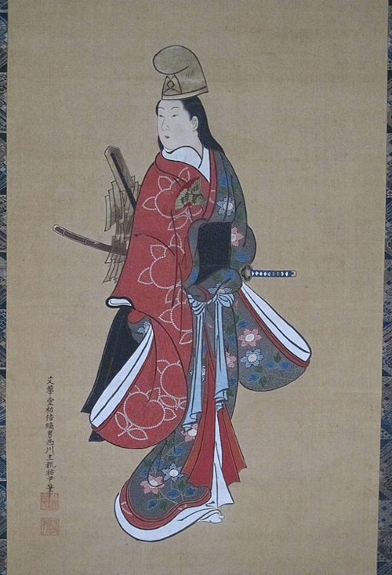

Amaterasu, conocida como la diosa del sol en la mitología japonesa, ocupa un lugar central y reverenciado en el panteón divino. Es considerada la progenitora del linaje imperial y el símbolo máximo de la luz y la vida. Amaterasu, cuyo nombre significa "que brilla en el cielo", es descrita como una divinidad benevolente y poderosa que trae el amanecer y el calor vital al mundo. Según las leyendas, se cree que reside en el Reino Celestial, desde donde irradia su energía luminosa. Su figura es representada como una hermosa diosa, rodeada de rayos solares y portando un espejo, que simboliza la pureza y la sabiduría. Los japoneses la adoran y le rinden culto a través de rituales y festivales, buscando su protección y bendiciones para la prosperidad y el bienestar de la nación. Amaterasu encarna la fuerza y la belleza del sol, siendo un símbolo vivo del poder divino y la armonía cósmica en la cultura japonesa.

El período Heian en Japón se extiende desde el año 794 hasta el 1185. Durante este tiempo, la corte imperial estableció su sede en la ciudad de Heian-kyo (actual Kyoto), lo que llevó a un florecimiento de la cultura cortesana y literaria. Se caracterizó por una refinada aristocracia, con una estricta estructura social y rígidos protocolos. Las mujeres nobles desempeñaron un papel destacado en la sociedad, y se desarrollaron formas literarias como la poesía tanka y la novela "Genji Monogatari". El arte también prosperó, con pinturas de estilo japonés y la creación de rollos ilustrados. Sin embargo, también hubo tensiones políticas y luchas de poder, lo que eventualmente condujo al declive del período Heian y al surgimiento de los samuráis en el período siguiente.

Esta es una serie de rollos de pergamino que representan escenas cómicas de animales antropomorfos, como conejos y monos, que se comportan como seres humanos. Estas pinturas se caracterizan por su estilo animado y humorístico, y son consideradas una de las primeras formas de manga en Japón.
Este rollo de pergamino fue creado por el famoso artista japonés Tosa Mitsuoki. Contiene ilustraciones detalladas y coloridas que representan escenas de la vida de la corte imperial durante el período Heian. Las pinturas muestran a los miembros de la nobleza vistiendo elaborados kimonos y participando en actividades cortesanas.

Durante el período Kamakura, el arte en Japón reflejó la influencia del budismo Zen y el ascenso de la clase samurái. Se destacaron la escultura en madera de Buda, con un estilo más realista y expresivo, y la pintura de rollos, con temáticas religiosas y narrativas. También se desarrollaron las artes marciales, como la arquería y la ceremonia del té. La simplicidad, la serenidad y la conexión con la naturaleza fueron características distintivas del arte kamakura, dejando un legado duradero en la estética japonesa

Armadura Samurai/Yoroi Kabuto. Pintado con tinta y pigmentos sobre seda. Firmado y sellado. El escudo familiar con forma de acedera rastrera llamado Kenkatabami, que ha sido un patrón popular desde los períodos Heian (794-1185) y Kamakura (1185-1333), y se transformó en un escudo familiar alrededor del período Nanboku-chō. (1336-1392): La época contó con batallas entre el Emperador y el Shogunato. Entre las crestas botánicas, es la segunda cresta familiar más popular después de la paulownia.

Esta pintura del período Kamakura destaca por su estilo dinámico y vigoroso. Representa un dragón serpenteante entre nubes y olas tumultuosas, simbolizando el poder y la fuerza. Los trazos audaces y el uso del color dan vida a la composición, mostrando la influencia de la cultura samurái en el arte.

Esta pintura del período Kamakura presenta la figura de un Bodhisattva, una deidad budista que representa la iluminación y la compasión. La obra se caracteriza por la serenidad y la sonrisa tranquila del Bodhisattva, reflejando la influencia del budismo Zen en la búsqueda de la iluminación interior. Los colores suaves y la sutileza de los detalles resaltan la espiritualidad y la calma.

El período Edo (1603-1868) en Japón fue una era de estabilidad política y auge cultural. El arte durante este tiempo se caracterizó por su refinamiento y diversidad. Surgieron importantes escuelas de pintura, como la escuela Kanō, que produjo obras narrativas y representaciones naturales. También se popularizó el ukiyo-e, un estilo de grabado que retrataba escenas de la vida cotidiana y actores famosos. La cerámica Kakiemon y el arte del jardín fueron otras expresiones artísticas destacadas en el período Edo. La estética refinada y la atención meticulosa al detalle definen este período artístico.

Las Terakoya (寺子屋 terako-ya?, "escuelas del templo, escuelas primarias privadas") eran instituciones educativas privadas que enseñaban a leer y escribir a los hijos de japoneses pobres durante el período Edo.

Shirabyōshi (白拍子?) es el nombre con el que se denominó a las bailarinas que desarrollaban danzas tradicionales japonesas (también denominada "shirabyōshi"), ataviadas con indumentarias masculinas. La profesión de shirabyōshi se desarrolló en el siglo XII y era realizada para nobles, samuráis (bushi) de alto rango y celebraciones.
